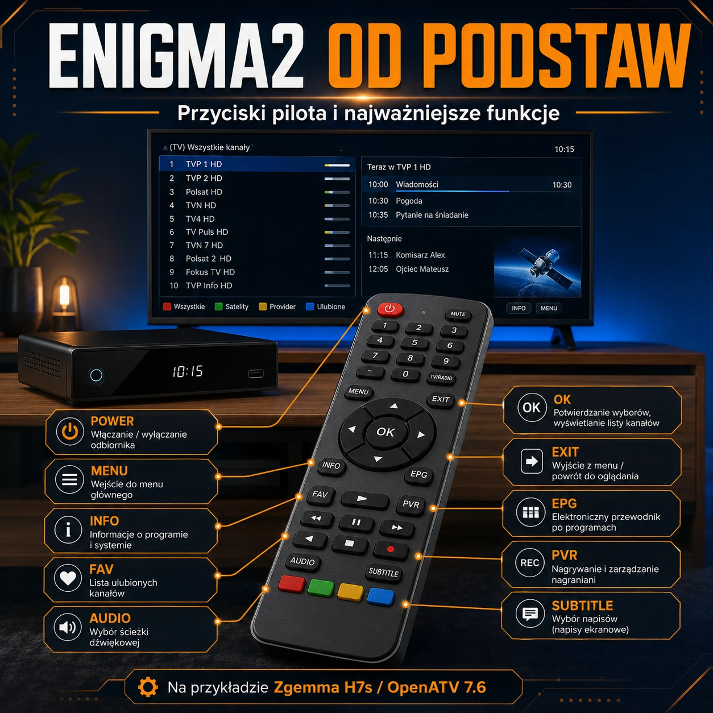

Witam na mojej stronie Paweł Pawełek
Enigma2 od podstaw
Pilot Enigma2 — funkcje przycisków
Praktyczny opis przycisków pilota, listy kanałów, EPG, nagrywania, timeshiftu i najważniejszych funkcji tunera na przykładzie Zgemma H7s oraz OpenATV 7.6.

O poradniku
Obsługa tunera z systemem Enigma2 może początkowo wydawać się skomplikowana. Pilot posiada wiele przycisków, a ten sam klawisz może wykonywać inną funkcję podczas oglądania telewizji, przeglądania listy kanałów, korzystania z EPG, odtwarzania nagrania lub pracy we wtyczce.
Poniższy poradnik został przygotowany na przykładzie tunera Zgemma H7s z systemem OpenATV 7.6. Podstawowe zasady są jednak podobne także w innych odbiornikach oraz systemach Enigma2, takich jak OpenPLi, OpenViX, OpenBH, Egami, Pure2 czy OpenSPA.
Spis treści
Wybierz interesującą funkcję pilota lub część obsługi tunera.
Najważniejsza zasada obsługi Enigma2
W Enigma2 przyciski są kontekstowe. Oznacza to, że ich działanie zależy od aktualnie otwartego ekranu.
Przykładowo:
- zielony przycisk w ustawieniach zwykle zapisuje zmiany,
- zielony przycisk w EPG może dodać timer,
- zielony przycisk na liście kanałów może pokazać satelity,
- zielony przycisk we wtyczce może uruchamiać jej główną funkcję.
Aktualne znaczenie kolorowych przycisków jest zazwyczaj opisane na dole ekranu.
OpenATV obsługuje również krótkie i długie naciśnięcia. Dzięki temu jeden przycisk może mieć przypisane dwie różne funkcje.
POWER — włączanie i wyłączanie tunera
Krótkie naciśnięcie przycisku POWER:
- włącza tuner ze stanu czuwania,
- przełącza działający tuner do czuwania.
Długie naciśnięcie najczęściej otwiera menu zasilania, w którym dostępne są:
- czuwanie,
- głębokie czuwanie,
- restart interfejsu GUI,
- restart całego systemu,
- wyłączenie tunera.
Czuwanie a głębokie czuwanie
W trybie czuwania system nadal pracuje. Tuner może wykonywać zaplanowane nagrania, aktualizować EPG i realizować inne zadania.
Głębokie czuwanie niemal całkowicie wyłącza urządzenie i ogranicza pobór energii.
Restart GUI
Restart GUI uruchamia ponownie interfejs Enigma2 bez pełnego restartowania systemu Linux. Jest często wymagany po:
- zmianie skina,
- instalacji niektórych wtyczek,
- zmianie ustawień interfejsu,
- aktualizacji listy kanałów,
- zmianie konfiguracji systemowej.
MUTE, VOL+ i VOL−
MUTE
Przycisk MUTE wycisza dźwięk. Ponowne naciśnięcie przywraca poprzedni poziom głośności.
VOL+ i VOL−
Przyciski służą do zwiększania i zmniejszania głośności tunera.
Sterowanie głośnością telewizora zamiast tunera może wymagać:
- konfiguracji HDMI-CEC,
- zaprogramowania pilota uniwersalnego,
- odpowiednich ustawień telewizora.
Przyciski numeryczne 0–9
Podczas oglądania telewizji przyciski numeryczne służą do bezpośredniego wyboru kanału.
Po wpisaniu numeru tuner:
- pokaże nazwę znalezionego kanału,
- odczeka ustawiony czas,
- przełączy się na wybraną pozycję.
Wybór można zazwyczaj zatwierdzić przyciskiem OK.
Przycisk 0
Przycisk 0 najczęściej przełącza między dwoma ostatnio oglądanymi kanałami.
W zależności od ustawień może również obsługiwać:
- PiP,
- kanał awaryjny,
- historię kanałów,
- dodatkowe funkcje timeshiftu.
Przyciski numeryczne podczas odtwarzania
Podczas odtwarzania filmu, nagrania lub timeshiftu przyciski mogą wykonywać szybkie skoki:
- 1 — skok do tyłu,
- 3 — skok do przodu,
- 4 — średni skok do tyłu,
- 6 — średni skok do przodu,
- 7 — mały skok do tyłu,
- 9 — mały skok do przodu.
Długość skoków można zmienić w ustawieniach odtwarzania.
Krzyżak: góra, dół, lewo i prawo
Góra i dół
Przyciski służą do:
- poruszania się po menu,
- wybierania kanałów,
- zaznaczania pozycji na listach,
- otwierania listy kanałów,
- zmiany kanału — zależnie od konfiguracji.
Lewo i prawo
Przyciski mogą:
- zmieniać wartości w ustawieniach,
- przechodzić między zakładkami,
- zmieniać kanał,
- regulować głośność,
- przewijać nagranie lub timeshift,
- pokazywać poprzedni albo następny program.
Ich działanie podczas oglądania telewizji można dostosować w ustawieniach OpenATV.
OK
Przycisk OK jest jednym z najważniejszych klawiszy pilota.
Podczas oglądania telewizji:
- pokazuje infobar,
- wyświetla informacje o bieżącym programie,
- ponowne naciśnięcie może otworzyć drugi infobar.
W menu:
- zatwierdza wybraną pozycję,
- otwiera zaznaczoną funkcję.
Na liście kanałów:
- przełącza na zaznaczony kanał,
- może zamknąć listę po przełączeniu.
EXIT i BACK
EXIT
Przycisk EXIT:
- zamyka aktualne okno,
- cofa do poprzedniego menu,
- zamyka listę kanałów,
- zamyka EPG,
- ukrywa infobar,
- wychodzi z ustawień.
W wielu ekranach wyjście przyciskiem EXIT nie zapisuje wprowadzonych zmian.
BACK
Przycisk BACK może:
- wrócić do wcześniej oglądanego kanału,
- przejść wstecz w historii kanałów,
- cofnąć do poprzedniego ekranu.
W niektórych pilotach funkcje BACK i EXIT mogą być podobne.
INFO
Przycisk INFO wyświetla informacje o aktualnie nadawanym programie:
- nazwę audycji,
- godzinę rozpoczęcia,
- godzinę zakończenia,
- pasek postępu,
- opis programu,
- informację o następnej audycji.
Ponowne naciśnięcie może otworzyć rozszerzony opis albo drugi infobar.
EPG — elektroniczny przewodnik po programach
Przycisk EPG otwiera przewodnik telewizyjny.
W zależności od ustawień może uruchamiać:
- EPG pojedynczego kanału,
- graficzne Multi-EPG,
- listę programów,
- ekran wyboru rodzaju EPG.
Z poziomu przewodnika można:
- sprawdzić program na kolejne godziny i dni,
- przeczytać opis audycji,
- zaplanować nagrywanie,
- dodać timer przełączenia,
- wyszukać podobne programy.
CH/PAGE+ i CH/PAGE−
Podczas oglądania telewizji przyciski zmieniają kanał.
W menu, EPG oraz długich listach przewijają zawartość całymi stronami.
Na liście kanałów mogą również przełączać między kolejnymi bukietami.
TV, RADIO i FAV
TV
Przycisk TV:
- przełącza tuner do trybu kanałów telewizyjnych,
- otwiera listę kanałów TV,
- pozwala wrócić z radia do telewizji.
RADIO
Przycisk RADIO otwiera listę stacji radiowych.
Powrót do kanałów telewizyjnych następuje po naciśnięciu TV.
FAV
Przycisk FAV otwiera ulubione lub listę bukietów.
Bukiety są własnymi grupami kanałów, na przykład:
- Polska,
- Filmy,
- Sport,
- Dzieci,
- Muzyka,
- Informacyjne,
- Kanały zagraniczne.
Kolorowe przyciski
Kolorowe przyciski nie mają jednej stałej funkcji. Ich działanie zależy od otwartego ekranu.
W ustawieniach
Najczęściej:
- czerwony — anulowanie zmian,
- zielony — zapisanie ustawień,
- żółty — dodatkowa funkcja,
- niebieski — dodatkowe ustawienia.
Na liście kanałów
Najczęściej:
- czerwony — wszystkie kanały,
- zielony — satelity,
- żółty — operatorzy lub dostawcy,
- niebieski — ulubione i bukiety.
Podczas oglądania telewizji w OpenATV
Niebieski przycisk najczęściej otwiera QuickMenu.
Długie naciśnięcie niebieskiego przycisku może otworzyć menu rozszerzeń zawierające między innymi:
- funkcje zainstalowanych wtyczek,
- ustawienia softcamu,
- OSCam Info,
- restart sieci,
- menedżer logów.
Krótkie i długie działanie niebieskiego przycisku można zamienić w konfiguracji.
AUDIO
Przycisk AUDIO otwiera wybór ścieżki dźwiękowej.
Można wybrać:
- język dźwięku,
- ścieżkę MPEG, AC3, E-AC3, AAC lub DTS,
- dźwięk stereo,
- lewy kanał,
- prawy kanał,
- dodatkowe ustawienia dźwięku.
Dostępne opcje zależą od oglądanego kanału lub odtwarzanego pliku.
SUBTITLE
Przycisk SUBTITLE otwiera menu napisów.
Można wybrać:
- napisy DVB,
- napisy teletekstowe,
- napisy zewnętrzne,
- język napisów.
Jeżeli kanał nie nadaje napisów, lista może być pusta.
TEXT
Przycisk TEXT uruchamia teletekst, jeżeli jest dostępny na oglądanym kanale.
Przycisk EXIT zamyka teletekst.
W niektórych ekranach TEXT może również zmieniać język lub układ klawiatury ekranowej.
PVR, FILE LIST, VIDEO i MEDIA
W zależności od modelu pilota przycisk może być opisany jako PVR, VIDEO, FILE LIST albo MEDIA.
Najczęściej otwiera:
- listę nagrań,
- odtwarzacz multimedialny,
- pliki zapisane na dysku HDD lub SSD,
- pliki z pamięci USB,
- materiały zapisane na zasobie sieciowym.
Na liście nagrań:
- góra i dół wybierają plik,
- OK rozpoczyna odtwarzanie,
- MENU otwiera dodatkowe operacje,
- EXIT wraca do poprzedniego ekranu.
REC — nagrywanie
Przycisk REC otwiera opcje natychmiastowego nagrywania.
Można:
- rozpocząć nagrywanie od razu,
- nagrywać do końca bieżącego programu,
- nagrywać przez określony czas,
- dodać timer nagrywania,
- zakończyć aktywne nagrywanie.
Nagrywanie wymaga poprawnie skonfigurowanego miejsca zapisu, na przykład:
- wewnętrznego dysku HDD lub SSD,
- dysku USB,
- pendrive’a,
- karty pamięci,
- zasobu sieciowego NFS lub CIFS.
PLAY/PAUSE i timeshift
Podczas odtwarzania nagrania przycisk PLAY/PAUSE zatrzymuje lub wznawia materiał.
Podczas oglądania telewizji może uruchamiać timeshift.
Timeshift pozwala:
- zatrzymać program na żywo,
- wznowić oglądanie,
- cofnąć transmisję,
- przewijać zapisaną część programu,
- w niektórych konfiguracjach zapisać materiał jako nagranie.
Timeshift wymaga nośnika z odpowiednią ilością wolnego miejsca.
REWIND, FAST FORWARD i STOP
REWIND
Przewija nagranie lub timeshift do tyłu. Kolejne naciśnięcia mogą zwiększać prędkość przewijania.
FAST FORWARD
Przewija materiał do przodu.
Podczas timeshiftu można przewijać tylko tę część programu, która została wcześniej zapisana.
STOP
Zatrzymuje:
- odtwarzanie filmu,
- odtwarzanie nagrania,
- timeshift,
- trwające nagrywanie — po potwierdzeniu.
TIMER i SLEEP
TIMER
Otwiera listę zaplanowanych timerów.
Timer może:
- rozpocząć nagrywanie,
- przełączyć tuner na wybrany kanał,
- działać jednorazowo,
- powtarzać się w wybrane dni,
- przełączyć tuner do czuwania po zakończeniu zadania.
SLEEP
Uruchamia wyłącznik czasowy.
Pozwala ustawić automatyczne:
- przejście do czuwania,
- wyłączenie tunera,
- zakończenie odtwarzania po określonym czasie.
V.MODE
Przycisk V.MODE zmienia sposób dopasowania obrazu do ekranu.
Dostępne mogą być tryby:
- oryginalne proporcje,
- letterbox,
- pan&scan,
- rozciągnięcie,
- powiększenie,
- dopasowanie obrazu 4:3 do ekranu 16:9.
Nie jest to to samo co zmiana rozdzielczości HDMI. Rozdzielczość 720p, 1080p lub 2160p ustawia się osobno w konfiguracji obrazu.
PORTAL i HELP
PORTAL
W zależności od modelu tunera może otwierać:
- portal producenta,
- ekran aplikacji,
- menu multimedialne,
- wybraną wtyczkę.
W niektórych systemach przycisk może nie mieć przypisanej funkcji.
HELP
Wyświetla pomoc dla aktualnie otwartego ekranu.
Może pokazać:
- dostępne skróty klawiszowe,
- funkcje przycisków,
- instrukcję obsługi danej wtyczki.
Obsługa listy kanałów
Po otwarciu listy kanałów najczęściej działają następujące przyciski:
- góra i dół — wybór kanału,
- OK — przełączenie na kanał,
- CH/PAGE+ i CH/PAGE− — zmiana strony lub bukietu,
- czerwony — wszystkie kanały,
- zielony — satelity,
- żółty — operatorzy,
- niebieski — bukiety,
- INFO — informacje o programie,
- EPG — przewodnik telewizyjny,
- MENU — dodatkowe operacje,
- EXIT — zamknięcie listy.
Najważniejsze funkcje tunera Enigma2
Pilot służy nie tylko do zmiany kanałów. Z jego pomocą można korzystać z najważniejszych możliwości odbiornika.
Konfiguracja głowic
Odpowiednia konfiguracja głowic pozwala:
- odbierać kanały z jednej lub kilku satelitów,
- korzystać z DVB-T2 albo DVB-C,
- oglądać jeden kanał i nagrywać inny,
- wykonywać kilka nagrań jednocześnie,
- używać instalacji Unicable,
- korzystać z obrazu w obrazie.
Wyszukiwanie kanałów
Enigma2 umożliwia:
- automatyczne skanowanie,
- ręczne skanowanie transpondera,
- skanowanie jednej lub kilku satelitów,
- wyszukiwanie DVB-T/T2,
- wyszukiwanie DVB-C,
- skanowanie sieciowe operatora.
PiP — obraz w obrazie
PiP pozwala wyświetlić dwa kanały jednocześnie.
Działanie tej funkcji zależy od:
- liczby dostępnych głowic,
- instalacji antenowej,
- transponderów używanych przez kanały,
- aktywnych nagrań,
- możliwości sprzętowych tunera.
Wtyczki
Wtyczki mogą rozszerzyć Enigma2 między innymi o:
- odtwarzanie IPTV,
- dodatkowe EPG,
- obsługę softcamów,
- pobieranie list kanałów,
- picony,
- kamery sieciowe,
- pogodę,
- YouTube,
- diagnostykę systemu,
- tworzenie kopii zapasowych.
OpenWebif
OpenWebif pozwala obsługiwać tuner z komputera, telefonu lub tabletu.
Umożliwia między innymi:
- korzystanie z wirtualnego pilota,
- przeglądanie kanałów,
- sprawdzanie EPG,
- dodawanie timerów,
- wykonywanie zrzutów ekranu,
- pobieranie nagrań,
- streaming kanałów,
- restart GUI lub całego systemu.
Konfiguracja własnych przycisków
W OpenATV można zmienić funkcje wielu przycisków pilota.
Dla części klawiszy można przypisać oddzielnie:
- krótkie naciśnięcie,
- długie naciśnięcie.
Dlatego dwa tunery z takim samym systemem mogą reagować inaczej na ten sam przycisk.
Na różnice wpływają również:
- model pilota,
- ustawiony keymap,
- używany skin,
- zainstalowane wtyczki,
- indywidualna konfiguracja użytkownika.
Podsumowanie
Najważniejsze przyciski Enigma2:
- OK — zatwierdzanie i wyświetlanie informacji,
- EXIT — zamykanie okna i cofanie,
- MENU — menu główne lub dodatkowe opcje,
- INFO — informacje o programie,
- EPG — przewodnik telewizyjny,
- FAV — lista bukietów,
- PVR — nagrania,
- REC — rozpoczęcie nagrywania,
- AUDIO — wybór ścieżki dźwiękowej,
- SUBTITLE — wybór napisów,
- kolorowe przyciski — funkcje opisane na aktualnym ekranie.
Najlepszym sposobem poznania Enigma2 jest obserwowanie opisów przycisków widocznych na dole ekranu i sprawdzanie działania krótkiego oraz długiego naciśnięcia.
Poradnik przygotowany na przykładzie Zgemma H7s i OpenATV 7.6. Większość opisanych funkcji działa podobnie w innych tunerach i systemach Enigma2.
Opracowanie: Paweł Pawełek